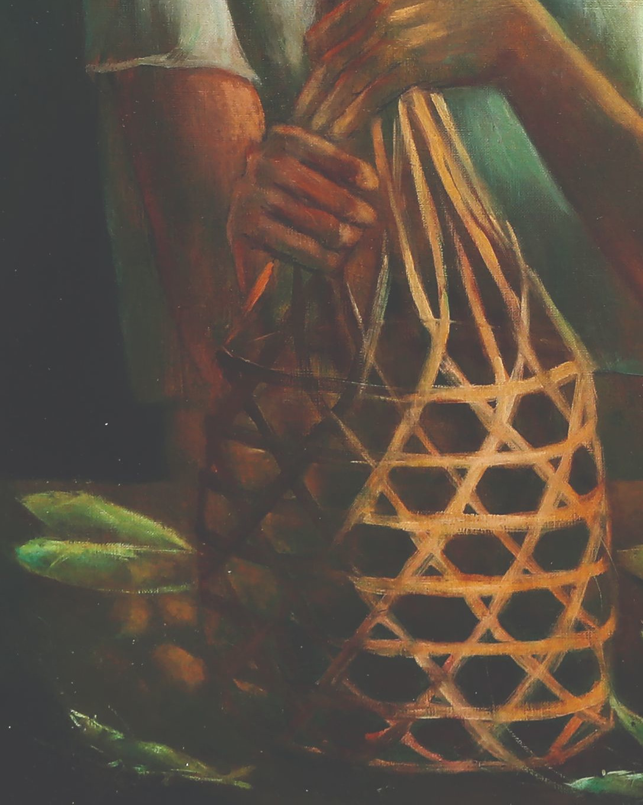

by Anita Magsaysay-Ho
Woman Holding a Basket of Mangoes is the epitome of Amorsolo's genre painting. Inspired by his childhood, where he spent the first thirteen years of life frolicking in rolling rice fields, he famously depicts rustic, idyllic landscapes and laboring common people.